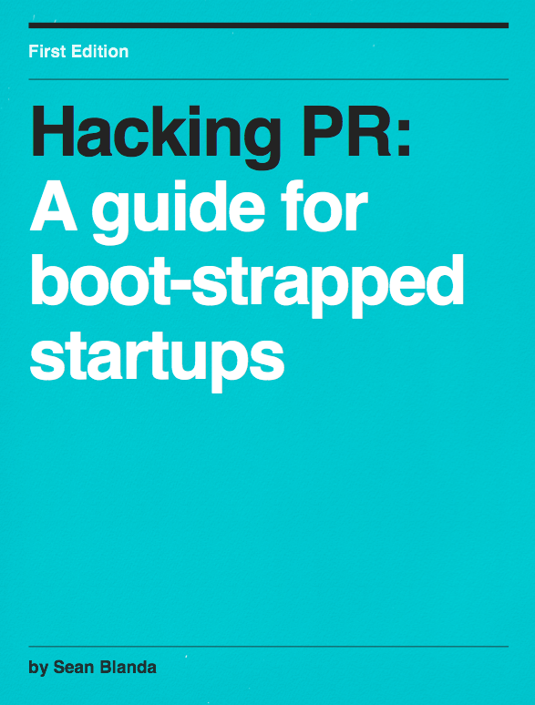

Cold-emailing TechCrunch is not a marketing plan
Introducing Hacking PR: A guide for bootstrapped startups.

Most startups fire off email after email to the press, and when they don't get a response, they shrug their shoulders and blame the media.
Why? Most startups don't understand how the media works. But you're not most startups.
Don't waste months learning by trial and error
Learn from the other side how to best build meaningful relationships with the media for the rest of your career while propelling your company to new heights. Save hours of frustration and burned bridges from bad pitches and give your product the respect it deserves.
What You'll Learn
Exact language to use in your email pitch to ensure you get coverage.
A two-step formula for nailing any press interview.
More than just "tips" but long-term strategies for building relationships with the press.
The 10-step checklist to ensure your credibility is established when the media sees your product.
A journalist's most common reservations when covering a startup, and how you can squash them.
How to play the long term game and outgrow the need for any media coverage.
...and much more
This ebook doesn't contain any unnecessary fluff, just the actionable information that you need today. Learn from the hundreds of startups, journalists, and entrepreneurs I've talked to in my career and change the way you push new products for the rest of your startup's life.
Hit the Ground Running
Even smaller PR firms can charge around $3,000 a month (not to mention costly retainers for larger launches). For a fraction of that, you can do it yourself and put your money where it belongs: into your product. Hacking PR gives you a crash course in crafting your own relationships with the press by building authentic long-lasting relationships and standing above the hundreds of pitches journalists get every day.
What You'll Get
- 1 DRM-free PDF of "Hacking PR" for all of your devices
- 3 DRM-free Mp3s of extended interviews featuring additional inside insights to supercharge your press campaigns
- Anytime access to the author for additional advice and pitch reviews
Outline
- Chapter 1: Attitudes
- Journalistic Ethics and why you should care
- What to do before approaching the media
- Red flags that will make you less credible
- Chapter 2: Tell a Story
- The importance of storytelling
- Pitching your business
- How to make the journalist's life easier, and why that gives you more control
- Chapter 3: Pitching
- Crafting the perfect pitch
- Targeting the right publications + how to build up to the big guys
- News versus feature articles
- Proven pitch emails
- Living outside the pitch, how to maximize your company blog and more
- Exclusives vs. Embargos and how to use both to your advantage
- Chapter 4: Interviewing
- How to get your message across in any interview
- Mastering the quotable sound byte
- The anecdotes you absolutely need ready
- The 12 questions you will almost always be asked
- The 1 trick journalists use to keep you talking
- What to do after the interview to "seal the deal" and ensure you build a lasting relationship with the reporter
- Chapter 5: Blogging
- How the masters use the company blog
- The 5 common characteristics of effective startup blogs (hint: it's not about you)
- How to circumvent the press all together
- Leverage a guest post strategy to supercharge your growth
- Bonus Chapter
- Three interviews featuring actionable insights from people who have been there
Featured interviews:
All Interviews are included as podcasts that come FREE with purchase of the book
Robert J. Moore
Founder, RJ Metrics
How to get a guest post on TechCrunch
Rick Turoczy
Silicon Florist / P.I.E
Building a solid pitch for journalists
Leo Widrich
Founder, Buffer
How to build a killer company blog
THIS BOOK IS NOT FOR EVERYONE
This book is for bootstrappers who don't want to waste precious runway on a PR agency. When you get enough money, it's okay, bring in the pros, you'll have other things to worry about. But for now, you're a small shop and you wear multiple hats. With a few minutes of work you can yield disproportionate results for your company's press strategy putting you lightyears ahead of your peers. The stuff you learn in Hacking PR can give you the knowledge that you can use for the rest of your career.
"This is the guide both tech reporters and P.R. folks have long needed, whether they knew it or not. Hacking PR is smart, brutally honest, nuanced and thorough. If you run a startup - or are thinking of launching one - you need this book."
- John Paul Titlow, Read Write Web
"Hacking PR is right next to 'Lean Startup' on the required reading list for entrepreneurs."
- Danny Schreiber, Silicon Prarie News
100% Money-Back Guarantee
If for whatever reason you are unsatisfied with Hacking PR send me an email and I'll refund your money, no questions asked.
About The Author
Sean Blanda is the associate editor and producer at Behance in NYC where he is dedicated to helping creatives and entrepreneurs succeeed. Previously he was the co-founder of Technically Philly in Philadelphia where he interviewed hundreds of venture capitalists and entrepreneurs. He is also one of the cofounders of Philly Tech Week.